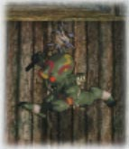
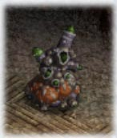
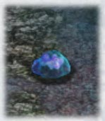
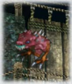

| 概要 | 情報 | ボス戦 |
| 攻略チャート | アイテム一覧 | 敵キャラ一覧 |
| マップ |
| 1 | 2 |
| Name | Image | HP | STR | DEF | LV. | EXP | GOLD | Note | Appearance | Memo |
| ガフ | 42 | 42 | 40 | 1 | 5 | 1 | フェルガナ街道をうろつく魔獣。元は野犬だったと思われるが、異変の影響ですっかり凶暴に。 一体一体は大したことないが、群れを相手にすると危険。 |
フェルガナ街道(〜溶岩地帯脱出) | ||
| リーズ | 67 | 44 | 44 | 2 | 8 | 1 | フェルガナ街道に咲く野草。 何が原因なのか、近くを通りかかる人に、固い種を撒き散らすようになった。 悪意は内容だが、不用意な接近は禁物。 |
フェルガナ街道(〜溶岩地帯脱出) | 移動しない | |
| ビクモール | 47 | 46 | 31 | 2 | 17 | 1 | 採掘所周辺にいるミツバチ。 以前はおとなしかったが、近年積極的に人を襲うようになった。 巨大化したため重量が増し、低空しか飛べないらしい。 |
ティグレー採石所 | ||
| グルムス | 52 | 50 | 50 | 3 | 24 | 2 | 暗がりを好む巨大蜘蛛。 いつもは天井などに張り付いており、丸まった姿はミカンそっくり。付近に獲物が通りかかると、毒性のある糸で攻撃してくる。 |
ティグレー採石所 | ||
| ケイロン | 57 | 48 | 44 | 4 | 33 | 2 | 元は採石所に棲んでいた蝙蝠。むやみに超音波を発しているのは、頭のコブが発達して前が見えなくなったかららしい。 | ティグレー採石所 | ||
| ラデル |  | 88 | 58 | 59 | 5 | 40 | 3 | ゴブリンの一種。怪力にまかせた棍棒の一撃は驚異。 肉を叩く感触が大好きで、獲物を見つけると執拗に追いかけてくる。走る姿がとても楽しげ。 |
ティグレー採石所 | |
| モズク | 113 | 68 | 61 | 6 | 65 | 4 | 採石所奥にいる巨大甲虫。 硬い外骨格に覆われており、剣で斬ってもほとんど弾かれてしまう。その反面、熱に弱いらしく、炎であぶればあっさり死亡。 |
ティグレー採石所(後半) | 火の魔法が有効 | |
| ファズル |  |
111 | 75 | 63 | 6 | 65 | 5 | 遺跡周辺に出没する梟。 異変の影響で日中でも、活発に行動するように。 鋭い鉤爪と、破壊力のある体当たりに要注意。 |
イルバーンズ遺跡 | |
| シグルド | 154 | 81 | 65 | 7 | 75 | 6 | ムチを巧みに使う獣人族。 知能がかなり発達しており常に自分に有利な間合いを保とうとする。顔がガフに似ているが、本人は関係を強く否定している。 |
イルバーンズ遺跡(前半) | ||
| イーガー | 82 | 81 | 75 | 8 | 85 | 5 | 異界から召還された魔物。 頭だけで飛び回り、炎による攻撃がいっさい聞かない。 死ぬときは周囲を巻き込んで爆発するので、田の下後も注意が必要。 |
イルバーンズ遺跡 | 倒した後、自爆する | |
| Name | Image | HP | STR | DEF | LV. | EXP | GOLD | Note | Appearance | Memo |
| Name | Image | HP | STR | DEF | LV. | EXP | GOLD | Note | Appearance | Memo |
| シーアン | 97 | 81 | 72 | 9 | 95 | 4 | 低位の魔道師。空間移動で相手を幻惑し、離れた場所から魔法弾を撃ってくる。 空間移動できる距離が短いので、出現したところを攻撃すればイチコロ。 |
イルバーンズ遺跡(前半) | ||
| ガルグ | 123 | 89 | 82 | 10 | 105 | 7 | 大きなアサミを持つ陸ガニ。 全面をガードしているので後ろや上からでないと、攻撃が通じない。肉が美味らしいが、食べるためには度胸が必要。 |
イルバーンズ遺跡 | ||
| ダイグルド | 155 | 95 | 89 | 11 | 115 | 7 | 獣人シグルドの上位種。 さらに華麗なムチを使い、バックステップも五割増に。 ただ、接近戦は大の苦手。立派な牙を持っているのに、なぜ咬みつかない? |
イルバーンズ遺跡(後半) | ||
| バール | 121 | 91 | 80 | 11 | 115 | 6 | 位階から召還された魔物。 跳ねているものを見つけると、三本の足で飛びかかってくる。 だが、目が一つなので距離が判らないらしく、攻撃がとてもおおざっぱ。 |
イルバーンズ遺跡 | ジャンプすると危険 | |
| シザリアン | 115 | 90 | 87 | 12 | 121 | 8 | 上位の魔道師。時間差をつけた三方向の魔法弾を撃ってくる。 シーアンを見下しているが、空間移動の短さはコイツも同じ。出現したところをザックリ。 |
イルバーンズ遺跡(後半) | ||
| ゾウン |  |
167 | 101 | 81 | 13 | 122 | 8 | 地下に生息する謎の生物。 体内は高圧ガスで満たされ、大きく膨れ上がっている。走る姿はコミカルだが、間近で見ると目玉がうつろで気持ち悪い。 |
溶岩地帯 | |
| ツァール | 121 | 103 | 78 | 13 | 124 | 8 | 溶岩地帯に適応した怪鳥。 死骸をついばむ習性を持ち、エサになりそうな者を見つけると執拗にまとわりつく。鳥が地下に棲むようなった理由は謎。 |
溶岩地帯(ギルンを倒すまで) | ||
| アルメンガー | 162 | 104 | 100 | 14 | 122 | 8 | 以前はひかえめな動物で、硬い甲羅も身を守るための物だった。 最近、体当たりを覚えて、積極的な性格に生まれ変わり、あちこちに突進を繰り返している。 |
溶岩地帯 | 体当たりを食らうと吹き飛ばされる | |
| ギューム |  | 175 | 105 | 93 | 15 | 131 | 9 | ホヤのような不思議な生物。 近づくと周囲に爆発性のなにかをはき出すので注意。 移動できないため、遠くから焔霊の腕輪で攻撃するのが得策。 |
溶岩地帯 | 移動しない |
| モズグス |  |
117 | 104 | 104 | 16 | 29 | 3 | 小型化し高熱に適応したモズク。減量の影響からか、とても怒りっぽくなった。 縄張りによそ者が近づくと、集団で攻撃し、いつまでもどこまでも追いつづける。 |
溶岩地帯 | 風の魔法が有効 |
| Name | Image | HP | STR | DEF | LV. | EXP | GOLD | Note | Appearance | Memo |
| Name | Image | HP | STR | DEF | LV. | EXP | GOLD | Note | Appearance | Memo |
| ケルツァール | 172 | 108 | 119 | 17 | 153 | 10 | 成長したツァール。体から炎を撒き散らして、周囲を焼き尽くす。 自身が焼かれない理由は不明。生命の神秘としかいいようがない。 |
溶岩地帯(ギルンを倒した後) | ||
| クゥガフ | 205 | 121 | 109 | 17 | 143 | 9 | ガフが異変の進行と共にさらに凶暴化。もはや、頭の中はガブリしかない。 パワーアップしたように見えるが、中身はどんどん壊れている様子。 |
フェルガナ街道(溶岩地帯脱出〜バレスタイン城攻略) | ||
| ディリーズ | 160 | 125 | 109 | 17 | 145 | 10 | リーズが異変の進行に応じて、さらに迷惑に。 必死で種を撒き散らす姿は悪意があるとしか思えない。 除草しても、しばらくするとまた生えてくる。 |
フェルガナ街道(溶岩地帯脱出〜バレスタイン城攻略) | 移動しない | |
| フォーゼン |  | 185 | 125 | 117 | 18 | 156 | 10 | スライム状の魔獣。中心に浮かぶ玉の一つ一つが本体らしく、時々分離して増殖する。 通常は数体が共生しているらしい。 |
ティグレー採石所 奥 | |
| ローバル | 213 | 134 | 102 | 18 | 156 | 11 | 食虫植物の変異体。素早く動く触手で獲物を絡め取る。 地面の震動を察知して反応するので、ジャンプから下突きを繰り返せば、簡単に倒すことができる。 |
ティグレー採石所 奥 | 移動しない | |
| ゲルド |  | 186 | 128 | 132 | 19 | 165 | 10 | 殺戮を好む子鬼。発達した目を持ち、暗闇でも性格に獲物を狙う。 鋭いツメによる攻撃は強力で、木製の盾くらいは簡単に貫く。 |
ティグレー採石所 奥 | ゲ、ゲルド? ・・・あの? |
| バーレン | 168 | 135 | 130 | 21 | 182 | 12 | 謎の浮遊体。高空から電撃を浴びせてくる。 傘の部分がフォーゼンに似ているので、元は同一の種だったと推測される。 |
ティグレー採石所 奥 | くらげ | |
| ドゥラデル |  |
264 | 135 | 130 | 21 | 188 | 13 | ラデルの上位種。図体に見合った怪力を誇り、そのハンマーは大地を揺らす破壊力を持つ。 ささいなダメージは、起こらせるだけなので、注意が必要。 |
ティグレー採石所 奥 | 見た目に惑わされないように |
| ゲル・グラッド | 207 | 140 | 130 | 22 | 204 | 14 | ゲルドの亜種。暗闇に溶け込む体色を持ち、気づいたときにはリーチの長いツメで刺されている。 逃げてもどこまでも追っかけてくるやっかいな相手。 |
ティグレー採石所 奥 | 攻撃範囲が異常に広い | |
| クラデル | 246 | 146 | 147 | 23 | 206 | 22 | 寒さに適応したラデルの亜種。知能は低いが戦士としての誇りを持っており、粗暴なだけのラデルとは対立している。 だが、パンツ一丁なところは共通。 |
エルダーム山脈 | ||
| Name | Image | HP | STR | DEF | LV. | EXP | GOLD | Note | Appearance | Memo |
| ジゲル | 156 | 149 | 125 | 24 | 146 | 20 | ジガバチの一種。昆虫なのに、極寒のエルダーム山脈でも活発に飛び回る。 仕留めた獲物は巣に持ち帰り、肉団子にして保存。 |
エルダーム山脈 | ||
| ハリック | 180 | 149 | 132 | 24 | 226 | 24 | 地面の下に潜んでいる不可思議な生物。近づくといきなり飛びかかって来る。 よく観察するのと、地中に尻尾が飛び出しているので、そこを下突きでサクリ。 |
エルダーム山脈 | 下突き出なくても攻撃できる | |
| Name | Image | HP | STR | DEF | LV. | EXP | GOLD | Note | Appearance | Memo |
| 1 | 2 |
| 概要 | 情報 | ボス戦 |
| 攻略チャート | アイテム一覧 | 敵キャラ一覧 |
| マップ |
Ys -フェルガナの誓い-
| 目次へ戻る | ページの上部へ |